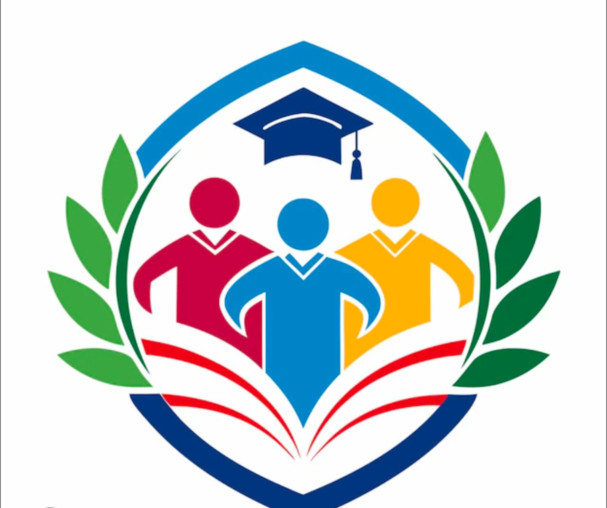

Un accompagnement d'élite en SVT, Mathématiques et Physique-Chimie pour les élèves de Terminale, mené par des professeurs émérites de plusieurs années d'expérience.
Solliciter un entretien de diagnosticTransformer la rigueur scientifique en succès d'examen. Nous préparons les leaders de demain aux exigences académiques des séries Terminales C & D.
Vous recherchez l'efficacité absolue et des résultats concrets. Notre méthode d'élite prend entièrement en charge le suivi académique de votre enfant, libérant votre esprit tout en assurant une préparation sans faille pour le BAC.
Le programme vous paraît lourd et stressant ? Nous simplifions les concepts complexes de SVT, Physique-Chimie et Maths grâce à des résumés structurés, des schémas optimisés et une méthodologie infaillible d'examen.
Professeurs émérites de SVT, Mathématiques et Physique-Chimie, basés à Abidjan — Cocody.
Pendant plus de 20 ans, nous accompagnons plusieurs élèves. Notre expertise nous permet d'identifier instantanément les lacunes d'un élève et d'ajuster notre méthode pour installer une confiance immédiate.
L'exigence de la démarche expérimentale :
Chaque chapitre est condensé sur une fiche de révision claire et intuitive, facilitant une assimilation rapide et solide des notions fondamentales.
Évaluation diagnostique au premier contact, puis rapports d'avancement périodiques transmis directement aux parents d'élèves.
Une maîtrise parfaite des critères d'évaluation des correcteurs du BAC pour faire gagner de précieux points lors de l'examen.
Des enseignants ponctuels, hautement professionnels et impliqués, qui redonnent le goût de l'effort et de la réussite à l'élève à domicile.
Une spécialisation fine sur l'année de transition la plus décisive du parcours scolaire ivoirien.
Une disponibilité et une réactivité accrues sur la commune de Cocody, avec des interventions possibles dans les autres communes d'Abidjan.
| Niveau Concerné | Série d'Études | Fréquence Conseillée | Investissement Mensuel |
|---|---|---|---|
| Terminale D | SVT / Sciences Spécialisées (Mathématiques et Physique-Chimie) | 2 séances / semaine (Haut niveau) | 100 000 FCFA |
| Terminale D | SVT / Sciences Spécialisées (Mathématiques et Physique-Chimie) | 1 séance / semaine (Soutien ponctuel) | 80 000 FCFA |
| 1ère D | SVT / Sciences Spécialisées (Mathématiques et Physique-Chimie) | 2 séances / semaine (Haut niveau) | 80 000 FCFA |
| 1ère D | SVT / Sciences Spécialisées (Mathématiques et Physique-Chimie) | 1 séance / semaine (Soutien ponctuel) | 60 000 FCFA |
| Terminale C | Mathématiques & Physique-Chimie | 1 séance / semaine | 60 000 FCFA |
Tarif par matière. Formule sur-mesure disponible pour un suivi multi-matières.
Statistiques basées sur le suivi de plusieurs élèves en classe de Terminale D sur les 5 dernières années d'exercice à Abidjan.
Le succès au BAC en Terminale C ou D n'est pas une question de chance. C'est le produit d'une méthodologie claire alliée à un travail rigoureusement structuré.
— Nos EnseignantsÉvaluation Initiale : diagnostic précis des lacunes et mise en confiance.
Fiches de Synthèse : acquisition de la méthodologie de l'analyse scientifique.
Bacs Blancs : entraînement en conditions d'examen réelles chronométrées.
Succès Garanti : finalisation du programme et révisions ciblées de dernière ligne droite.
Un premier échange téléphonique permet d'évaluer les besoins de votre enfant et de démarrer l'accompagnement rapidement.